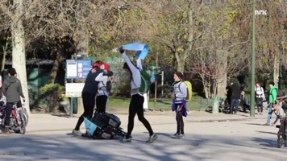
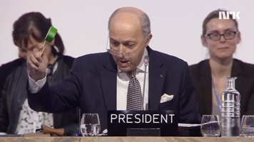
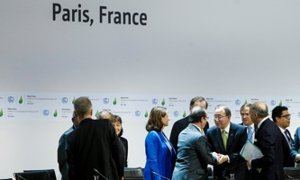

About
View the GitHub repository for this template.
This search result mock-up is/was made by Bjørn Tennøe of Farfar design AS. Work started in Feb 2016. Its purpose, apart from being a training ground and search user experience showcase for myself, is to be a starting point for people building enterprise search front ends, showing best practices, with an emphasis on:
- Disambiguation through 1) Result groups and 2) Autocomplete topics
- Editorial maintenance
- User added results & sources
- User influenced relevancy & findability and
- Findability reporting
See the inline comments for more details (hide comments).
Content is in part sampled from NRK and The Guardian. CSS framework: Bootstrap 3.
The mock-up is licensed under CC-BY-SA.
To do
- Evaluate:
- – Bootstrap 4
- – Flexbox
- Flesh out:
- – Add results
- – Findability reporting
Done!
- First draft finished Feb ’16
- Reached out to Elasticsearch & NRK
- Post on Github
Search for words
paris parisienne parisianTopic home pages
Paris, France 2015 Paris Climate Conference
Nov 2015 Paris attacks
2015 Paris Climate Conference
Nov 2015 Paris attacks
Previously visited
× Paris climate change deal too weak to help poor, critics warn × Ex-minister Sundtoft on Paris × A long journey to ParisCOP 21
| 2015 United Nations Climate Change Conference | ||
| Date: | Nov 30 – Dec 12, 2015 | |
| Location: | Le Bourget, Paris | |
| Websites: | Venue, UNFCCC | |
Multi-faceted filters
If available. Not on disambiguation template.
(Result section)
Interactive box
If available. E.g. weather, public transit, stocks etc.
The world's greatest diplomatic success
Fiona Harvey in Paris
With all 196 nations having a say, the UN climate deal, with all its frustrations and drama, has proven that compromise works for the planet
Want to do good at work? Here's where to find a job in the sustainability market

Bruce Watson and Ellen Weinreb
The historic COP21 agreement is poised to create a jump in sustainability hiring. Here are four areas of the job market expected to grow significantly in five years
Articles
-

Paris climate change deal too weak to help poor, critics warn
Fiona Harvey
COP21 agreement excludes poor and fails to put humanity’s interests above short-term goals, say environmentalists and financial experts
-
Governments adopt historic deal – as it happened
Adam Vaughan in Paris and James Randerson
-
COP21 is too male dominated and has male priorities, says UN special envoy
Fiona Harvey in Paris
News broadcasts
- [First broadcast]
- [Broadcast]
- [Broadcast]
Highly relevant result
Teaser clearly showing why this is so relevant. This content does normally belong in one of the result groups, but is rendered individually for visibility purposes since it is deemed so relevant.
TV programmes
- 
A long journey to Paris
NRK Daily news
Paris agreement ratified: – A great achievement!
NRK Daily news
- 
– Anybody for champagne?
NRK Daily news
Radio programmes
-
Ex-minister Sundtoft on Paris
0:10 The Break with Berg & Svabø
-
Kids travel to the Paris climate talks
0:08 Brønsj
-
Climate agreement drafted in Paris
0:03 Here & now with Erik Skarrud
Opinions
-

Saving the planet in a fracturing world
Editorial
Globalisation has been spinning into reverse. But the Paris talks illustrate the potential of determined diplomacy between jealously sovereign states
-
Reasons to be cheerful
Editorial
Shaping the future
Editorial
Experts
- [First expert]
- [Expert]
- [Expert]
Add a missing result
Is some content missing? Go ahead and add it!
Add a missing source
Yes, you can add an entirely new source to these results. The source can be visible only to you, or you can suggest it also for other people.
Request help
Are you unhappy with what you found? Chat with us and we'll go looking together with you! This service is provided in collaboration with the University of Oslo Library.
Reuse our content
From May 2016, NRK will forfeit copyright on all its textual articles1 and switch to a Public Domain model using CC-BY-SA. Visit our content reuse portal for practical tips. Shortcuts for sharing this result in JSON form: dynamic, static.
1Content written by our own journalists, currently or previously employed, both freelancers and permanent employees. Whenever the article's author has an e-mail address ending with @nrk.no, you are free to reuse the text.
Search result mock-up
Click the «about» link on the top of the page for details about this mock-up.
Suggested future license for NRK (no affiliation): All written articles copylefted under CC-BY-SA or NLOD. Other content, including photos and TV & radio programmes: As few rights reserved as possible.